User guide
In the following we want to give a short introduction into the functionality of this web application. Let's begin with a closer look to the navigation bar on the left side:
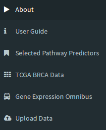
The first two elements are self explanatory, so we will start with
Selected Pathway Predictors
The purpose of this section is to enable users to get to know the
various pathway based classifiers we provide and to select one or several
pathway based predictors for their analyses. The latter can be done in the first tab:
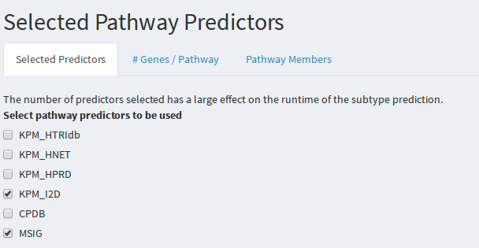
The second tab termed '#Genes / Pathway' shows for each predictor a violin plot. Each predictor is based on a number of 'pathway' features. These features in turn
consist of genes and thus vary in size. The number of genes across these features is illustrated here. The third tab termed 'Pathway Members' allows you to select a pathway predictor and to browse through each pathway feature.
For each feature we list the genes involved such as in the following example:
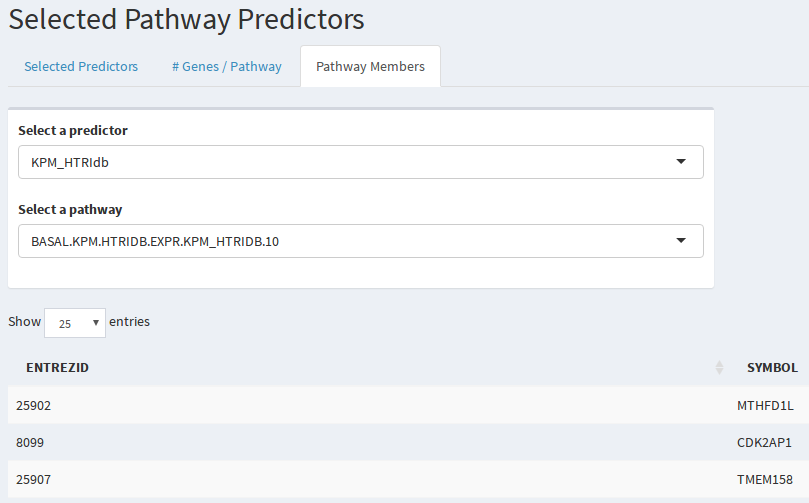
TCGA BRCA Data
In this section the user can investigate how the various pathway and classical gene set based predictors perform on our training data.
This is more specifically level 3 breast cancer data obtained from The Cancer Genome Atlas (Cancer Genome Atlas Network. Comprehensive molecular portraits of human breast tumours. Nature. 2012 Oct 4;490(7418):61-70.).
In the first tab, we can select a 'reference' against which all other predictors are compared. Currently, PAM50 is considered as
gold standard in the field (Parker, J. S.; Mullins, M.; Cheang, M. C. U.; Leung, S.; Voduc, D.; Vickery, T.; Davies, S.; Fauron, C.; He, X.; Hu, Z.; et al. Supervised Risk Predictor of Breast Cancer Based on Intrinsic Subtypes. J. Clin. Oncol. 2009, 27 (8), 1160–1167.)).
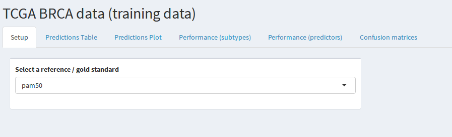
The following tab 'Predictions Table' shows for each TCGA breast cancer sample in the training set the label predicted by each classifier. This table can be searched as well as downloaded.
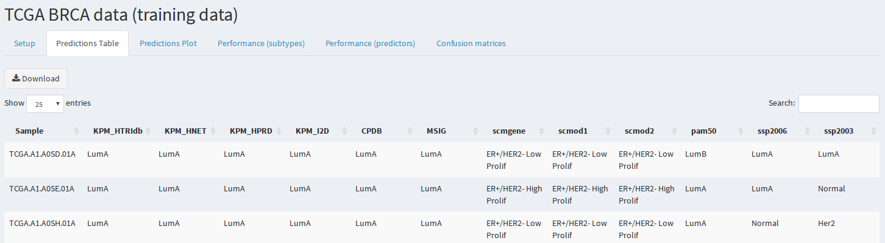
The third tab 'Predictions Plot' is more insightful and provides a visual impression on how the classifiers generally agree with the reference. Here, each color represents a
breast cancer subtype. Each column in the plot is a classifier and each row corresponds to a sample. It is clear that the classifiers all agree for many but not all of the samples:
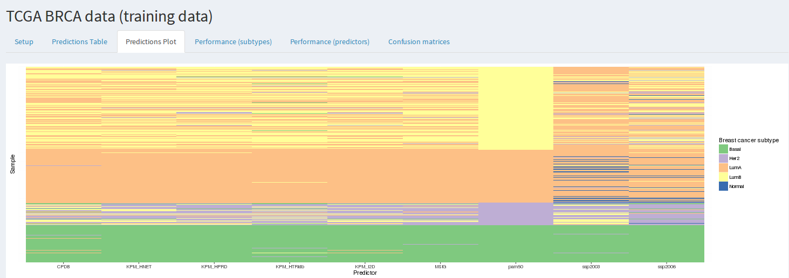
The remaining three tabs focus on comparing the performance of the different classifiers. The tab 'Performance (subtypes)' is a faceted plots in which columns depict breast cancer
subtypes and rows correspond to different performance measures: The F-score, precision and recall. The former is the harmonic geometric mean of the latter two. The higher the bars
the better the classifiers agree with the selected reference.
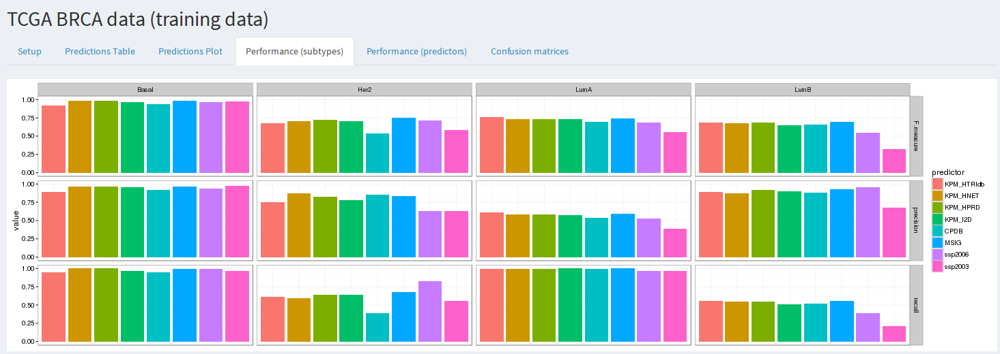
The next tab 'Performance (predictors)' shows essentially the same information. However, the columns now show different predictors and each plot shows the performance of one
classifier for different subtypes. The idea here is to provide a view tailored to identify the best predictor, while the previous tab is more suited to learn which of the subtypes
are more challenging to predict.
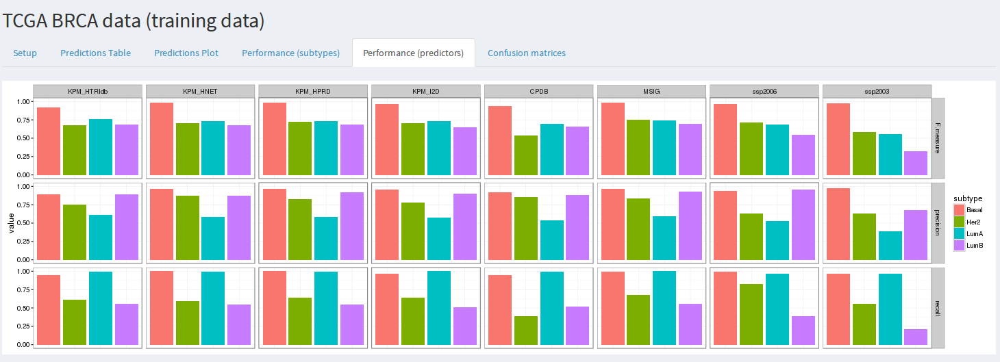
The last tab 'Confusion matrices' is a classical method to assess prediction performance between a classifier and a reference. Essentially, one can learn which classes are confused
with which other classes. This is more informative then just looking at the F-score, precision or recall, since one can learn for example that luminal A and B subtypes are often
confused, indicating that these closely resembling subtypes are difficult to distinguish.
The aim of this web application is obviously not to predict subtype labels for the training data but to test predictions on previously unseen data.
This is the topic of the next two sections. It is important to note, however, that these section follow the same principle layout as this one. We will thus not
discuss these features repetitively but focus on the differences.
Gene Expression Omnibus
The Gene Expression Omnibus (GEO) is the largest database for gene expression data to date. It also hosts a fair amount of studies related to breast cancer patients, including information
pertaining to the different subtypes. In this section, we enable users to predict breast cancer subtype labels to GEO samples. A GEO dataset with several samples is characterized by a GSE id, which
has to be entered to download the corresponding expression data to our server. An example ID is already provided for testing:
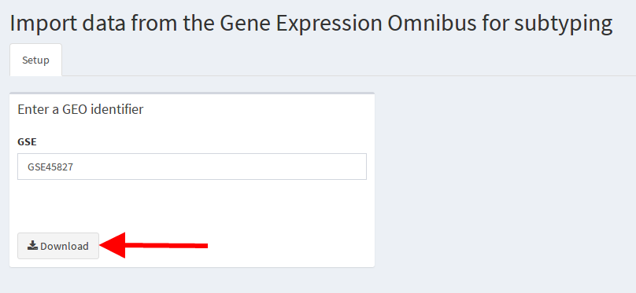
After clicking on the 'Download' button highlighted by the red arrow, the GEO data will be downloaded. Please be patient since even the processed data that is downloaded can
easily be several hundred megabytes in size. Note that the progress bar will not change during the download.
After the download is completed, the interface will update:
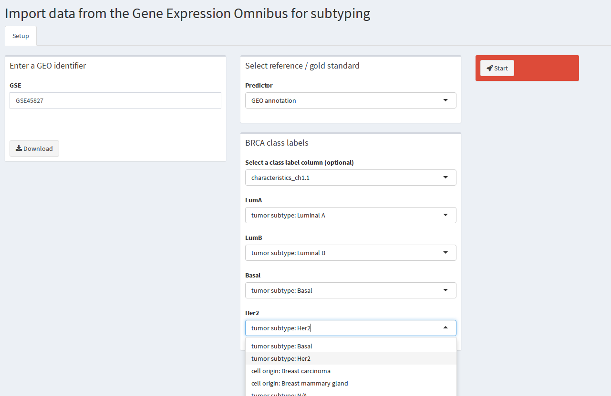
As you remember from the section on the TCGA data, the user has to select a reference for the following evaluation of the different class predictors. Here, it is also possible
to select breast cancer subtype labels associated with the GSE id (reference 'GEO Annotation'). Unfortunately, these meta data are not standardized. Consequently, users need to browse through the
available data to locate the subtype labels. In the example data, the correct selection is shown in the screenshot. After finishing the configuration, the user should press the
Start button to start the analysis.
A progress bar will inform the user about the individual steps of the analysis. Once the analysis is completed, additional result tabs are shown and the first one is automatically
selected:

We will not go into a detailled description of the individual result tabs since we have covered this in the section on TCGA data.
Upload Data
Obviously not all gene expression data is available on GEO. Therefore, we also support users that want to upload custom data sets for breast cancer subtype prediction and for comparing
different predictors:
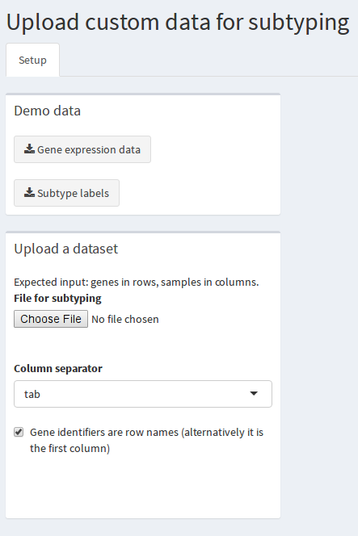
In the beginning, only a setup tab is shown. Here we have two boxes, the first of which provides example data that can be downloaded to learn how the input data should be structured and
to be able to test this feature of our application. The second box enables users to upload a custom data set. tab, semicolon and comma separated files are acceptable as input. Please note that Excel files are not supported and need to
be converted to a text-based format prior to upload. A checkbox is also shown 'Gene identifiers are row names (alternatively it is the first column)'. The background for this is that
the first column of a file is considered to contain row names if the header (column names) is one element shorter than the number of total columns. If the first column is named please
remove the checkmark from this checkbox. After uploading a file either a error message is shown or more options appear:
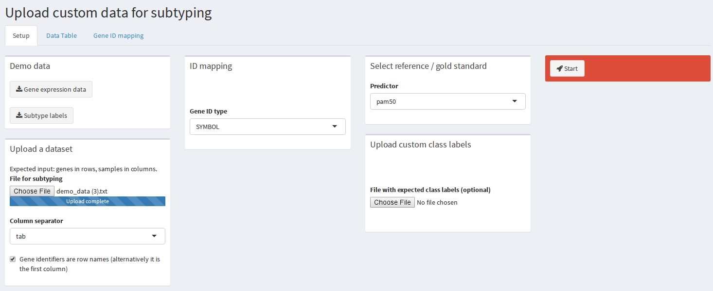
Many different types of gene identifiers are commonly used. The predictors we included here expect Entrez gene identifiers. In case your dataset uses a different type of identifier, we
support as a convenience feature to map these identifiers to Entrez identifiers. To this end, please select the correct identifier type used in your dataset. If none of the identifiers
can be mapped, an error message will be shown. In case several Entrez ids map to a single identifier in the data set, all possible Entrez identifiers will be considered in the subsequent
analysis. Adjacent to the ID mapping, users can select a reference as explained in the previous two sections. If the user wishes to compare the predictors against user-provided class
labels this is easily possible: In the box below called 'Upload custom class labels' a class label file can be added. Please refer to the demo class label file for the correct format.
After uploading a custom class label file, the user is required to map the names in the file to the breast cancer subtype labels:
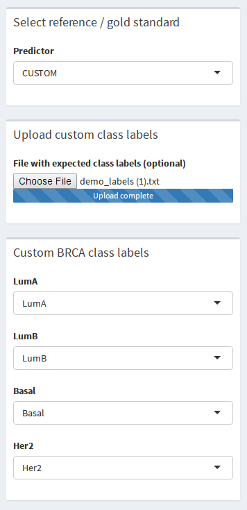
Finally, the user can press the start button and trigger the analysis of the data. Just as for GEO datasets, the first result tab will automatically be selected once the analysis
is finished. Please refer to the section about TCGA data to learn more about the different result tabs.
This is the end of our user guide. In case you encounter issues with our web application do not hesitate to send us an e-mail (see 'About').